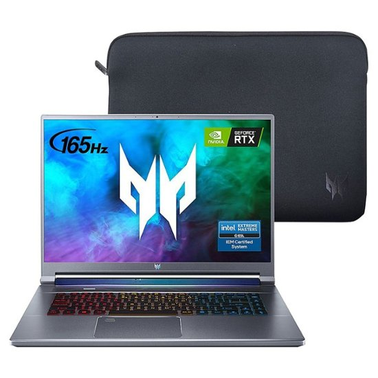
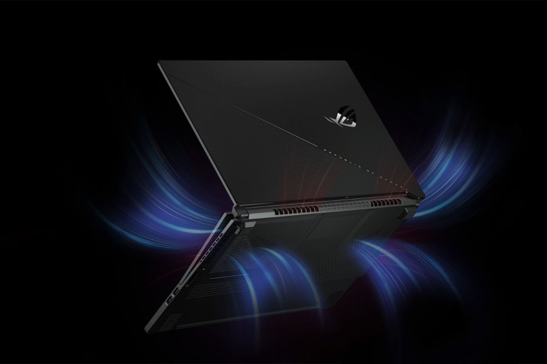

The Acer predator triton 500 can be used for various purposes like video editing, 3D modeling, animation, watching movies and etc. but mainly it is used for gaming. Since this is a gaming laptop, it would be a crime not to mention the gaming capability of the device. You would get outstanding perfromance if you run a couple of games in various settings with the Turbo mode on and GPU overclocking in the Extreme profile to get the best result. However running games will increase the temperature, but, it will not trouble you that much. The keys will get heated up if you go for a long gaming session.

The acer predator Triton 500 is equipped with a sizable battery, but due to its focus on performance, it may not provide extended battery life. For general usage scenario, the battery life may be longer, ranging from 4 to 6 hours.
As with the other Predator laptops, the Triton 500 comes with the PredatorSense app. You can access it with the help of the dedicated key right below the power button class="button" or through the windows menu.the layout is pretty much standard, however, you don’t get a Numpad. What you do get are the separate media keys just below the Predator Sense button class="button". And a turbo button class="button" right above the F1 and F2 keys. There are no dedicated buttons for End and Home, however, they are tied up with the function keys.
ASUS ROG Zephyrus S17
The Asus ROG Zephyrus S17 is a high-end gaming laptop that offers a powerful and immersive gaming experience. It features a sleek and premium design with a large 17.3-inch display, providing a wide and vibrant visual experience. Powered by an Intel Core i9 processor and an NVIDIA GeForce RTX graphics card, the Zephyrus S17 delivers impressive performance for demanding games and resource-intensive tasks. It boasts ample memory and storage options for seamless multitasking and quick game loading times. The laptop also incorporates advanced cooling technology to keep temperatures in check during intense gaming sessions.

The keyboard is optimized for gaming with customizable RGB lighting and responsive keys. Additionally, the Zephyrus S17 supports high-refresh-rate displays and comes with multiple connectivity options, including USB Type-C and Thunderbolt 4 ports. Overall, the Asus ROG Zephyrus S17 is a top-tier gaming laptop that combines powerful hardware, a stunning display, and gaming-focused features to satisfy even the most demanding gamers.
Dell XPS 13
The Dell XPS 13 is a highly regarded and premium ultrabook that excels in both design and performance. It features a compact and sleek form factor with an edge-to-edge InfinityEdge display, offering an immersive viewing experience on its 13.3-inch screen. The XPS 13 is available with various configurations, including Intel Core i5 or i7 processors, ample RAM, and fast storage options, ensuring smooth performance for everyday tasks and productivity. The laptop is known for its exceptional build quality, utilizing premium materials such as aluminum and carbon fiber.
The keyboard is comfortable and backlit, allowing for efficient typing even in low-light environments. The XPS 13 is also equipped with a wide range of ports, including Thunderbolt 4, USB-C, and microSD card slot, providing flexibility for connectivity. Furthermore, it boasts a long-lasting battery life, allowing for extended usage without needing frequent charging. Overall, the Dell XPS 13 is a reliable and stylish ultrabook that offers a balance of portability, performance, and premium features for professionals and users seeking a top-tier laptop experience.
Component
Acer Predator Triton 500
ASUS ROG Zephyrus S17
Dell XPS 13
Type
Laptop
Laptop
Laptop
Processor
Intel Core i7-10750K
AMD Ryzen 9 5900HX
Intel Core i5-11300H
Memory (RAM)
16GB DDR4
32GB DDR4
8GB DDR4
Hard Drive
512GB NVMe SSD
3TB PCIe NVMe SSD
512GB SSD
Monitor (Screen Size)
15.6 inches
17.3 inches
14 inches
Video Card
NVIDIA GeForce RTX 3070
NVIDIA GeForce RTX 3080
Intel Iris Xe Graphics
Operating System
Windows 10 Home
Windows 10 Pro
Windows 11 Home
Other Accessories
Backlit Keyboard, Webcam
Fingerprint Reader, Thunderbolt 4
Wi-Fi 6, Bluetooth 5.1
Optical Drive
No
No
No
Cost
$1,499
$2,149
$1,299
My Choice
Since I prioritize gaming performance and a high-refresh-rate display, the Acer Predator Triton 500 is an excellent choice. This gaming laptop is specifically designed to deliver an exceptional gaming experience. With its powerful hardware, such as the Intel Core i7 processor and NVIDIA GeForce RTX graphics card, it can handle demanding games with ease. The high-refresh-rate display, typically 144Hz or higher, provides smooth and fluid visuals, which allows me to fully immerse yourself in the gaming world. Additionally, the Triton 500 offers advanced cooling mechanisms to keep temperatures in check during intense gaming sessions, ensuring optimal performance. Furthermore, the backlit keyboard attracts me as a gamer and other gaming-centric features enhance my overall gaming experience.
"Acer Predator Triton 500 Review: This Thin and Light Laptop Even Has GeForce RTX." PCWorld, www.pcworld.com/article/397381/acer-predator-triton-500-review-with-geforce-rtx.html. Accessed 28 May. 2023.
"Andronico, Michael. "The Dell XPS 13 2022 Makes the Best Windows Laptop Look Even More Stunning." CNN Underscored, 20 Oct. 2022, www.cnn.com/cnn-underscored/reviews/dell-xps-13-2022.Accessed 28 May. 2023.
“ASUS ROG Zephyrus S17 GX703 Review: A Gaming Laptop for All Your Money.” Gagadget.com, gagadget.com/en/73941-asus-rog-zephyrus-s17-gx703-review/. Accessed 28 May 2023.
Image source
Bbystatic.com, 2023, pisces.bbystatic.com/image2/BestBuy_US/images/products/6469/6469289_sd.jpg. Accessed 28 May 2023.
"Dell's Ultra-Thin and Lightweight XPS 13 Laptop Features Low-Carbon Aluminium Chassis; Aluminium Extrusion, Profiles, Price, Scrap, Recycling, Section." Alcircle, www.alcircle.com/news/low-carbon-aluminium-chassis-underpins-dell-s-ultra-thin-and-lightweight-laptop-the-xps-13-83315. Accessed 28 May 2023.
Gadgetbytenepal.com, 2023, oss.gadgetbytenepal.com/wp-content/uploads/2021/05/Asus-ROG-Zephyrus-S17-Performance-Cooling.jpg. Accessed 28 May 2023.